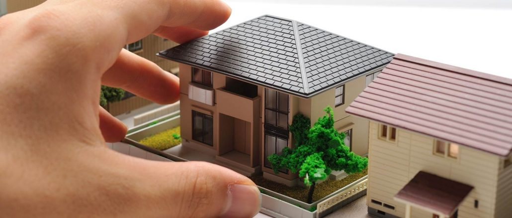
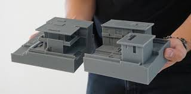
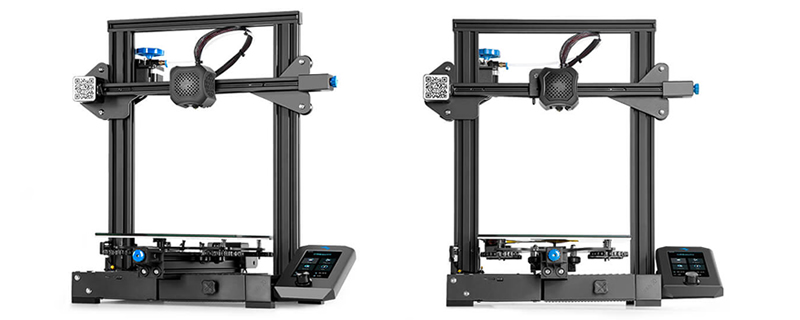

Home
Get To Know Us
Our Contact
3rDimensionPrints
Use the arrows to view a few of our photos
1 / 3

Image of the model house
2 / 3

Image of different model
3 / 3

Image of printer
❮
❯
3rDimensionPrints is a local company that specialises in creating small scale replicas of modern building to be tested to withstand local environmental factors. We employ